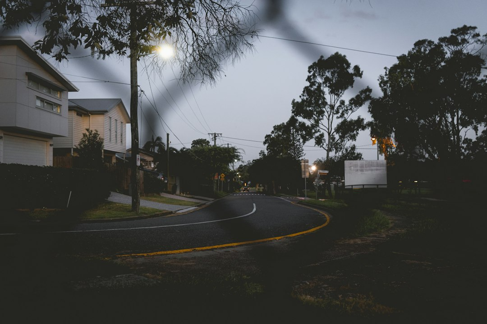

For a Brisbane home charger enquiry, the source page points to four practical inputs before assessment: where the vehicle normally parks, where the equipment could sit, how the cable might reach the switchboard, and whether any owner or building-management questions apply. One key legal point is explicit: fixed electrical work must be completed by an appropriately licensed Queensland electrical contractor. Switchboard upgrades are not automatic and depend on the observed board, capacity and proposed load.
For homeowners comparing home ev charger installation brisbane options, the useful starting point is not the charger brand, but the parking position, cable route and switchboard access.
Home Ev Charger Installation Brisbane Explained
EV Charger Installation Brisbane frames a home charger project as an assessment-first task. The published guidance asks homeowners to start with the everyday parking position, the likely charger location and the route a cable might take back to the switchboard. Those details decide what a contractor can sensibly inspect before discussing equipment, circuit design or installation access.
The page does not promise a fixed price, timing or standard package. That restraint is useful, because a driveway, garage, apartment car bay or older switchboard can change the questions that need to be answered. The practical preparation is simple: take note of where the vehicle sits most nights, whether the cable would cross a walkway, whether the switchboard can be accessed without moving stored items, and whether an owner, strata contact or building manager needs to be involved.
What to prepare before requesting a review
The source guidance says to record the normal vehicle position, proposed equipment location, switchboard access and any owner or building-management question before requesting an assessment. That turns a vague enquiry into a site-specific conversation. It also helps avoid early assumptions about whether the job is straightforward, needs extra access planning or should wait until an approval question is answered.
- Vehicle position: note whether the car usually parks in a garage, driveway, carport or allocated bay.
- Equipment position: identify a wall or post area that appears practical, without treating it as the final technical decision.
- Switchboard access: check whether the board is reachable for inspection and whether photos can be supplied if asked.
- Approval questions: list any owner, landlord, strata or building-management issue before the site review.
For a broader crawl path on the same topic, the related guide to EV charger installation in Brisbane sits beside this home-focused page.
Circuit and switchboard questions
The published FAQ avoids one-size-fits-all answers. It says a contractor assesses the intended charger load, existing switchboard and cable route before specifying the circuit and protection. That means the useful homeowner question is not simply whether a charger needs its own circuit, but what the contractor needs to see before choosing the right electrical design.
The same FAQ says a switchboard upgrade is not automatic. It depends on the observed board condition, available capacity and proposed charging load. Homeowners should be careful with any early answer that treats an upgrade as certain before inspection, or rules it out without looking at the board. A cleaner request is to ask the contractor what switchboard observations would change the scope of work.
Photos can support the first conversation, but the source page still points back to assessment. If the provider asks for images later, useful photos would show the parking area, proposed charger position, switchboard and any access constraint without needing to guess the final installation method.
Who this applies to
This guide is for Brisbane homeowners planning a fixed charger at a residential property and trying to prepare a clear enquiry. It fits people who can describe where the vehicle normally parks, can identify likely equipment and cable-route constraints, and need a licensed contractor to assess the electrical side.
It is also relevant where the property is not controlled by one decision maker. The source page specifically mentions owner and building-management questions, so apartment residents, tenants or owners in managed buildings should raise permission and access questions early. The guide does not provide a substitute for that approval process. It simply helps the resident bring the right issues to the first assessment conversation.
The page is narrower than a buyer guide to charger brands, energy plans or vehicle models. Its value is in the pre-installation checks that shape whether the job can be reviewed properly: parking, equipment position, switchboard access, cable path and permission questions.
Quote and acceptance boundaries
The source page includes a clear caution that quotes, prices, rates and estimates shown or provided are indicative only and depend on individual circumstances. It also says submitting the enquiry form does not confirm provider availability, timing or acceptance of the work. Those limits matter because an installation cannot be reduced to a form entry alone.
A useful enquiry should therefore separate facts from preferences. Facts include where the car parks, whether the switchboard can be inspected and who controls the building area. Preferences include charger position, neatness of cable route and timing. The assessment can then test what is technically and practically possible.
The page also states that enquiry details may be shared with independent service providers who may contact the person about the enquiry, subject to the form consent. Homeowners who are comparing options should read that consent wording before submitting and keep a note of what project details they provided.
- Map the parking position. Write down where the vehicle normally parks and whether that position is likely to change.
- Choose a proposed charger area. Identify a practical equipment location for discussion without assuming it is technically final.
- Check switchboard access. Make sure the switchboard can be inspected or photographed if a provider asks for supporting details.
- List approval questions. Note any owner, landlord, strata or building-management issue before lodging the enquiry.
- Request an assessment. Use the prepared details to ask for a site-specific review by an appropriately licensed Queensland electrical contractor.
| Situation | Main question | Preparation |
|---|---|---|
| House or townhouse with direct parking | Can the charger position and cable route be assessed from the parking area to the switchboard? | Record vehicle position, likely equipment spot and switchboard access. |
| Managed building or shared property | Who needs to approve access, equipment position or building works before assessment proceeds? | Write down owner, strata or building-management questions before requesting review. |
| Older or uncertain switchboard | Does the board condition and capacity suit the proposed charging load? | Ask what observations would affect circuit, protection or upgrade decisions. |
Common questions
Does a home charger always need a switchboard upgrade? No. The source page says an upgrade is not automatic. It depends on the observed board condition, available capacity and proposed charging load.
Can a homeowner decide the circuit design before inspection? The published FAQ says a contractor assesses the intended charger load, existing switchboard and cable route before specifying the circuit and protection. Treat the circuit design as an assessment outcome.
Who must complete the fixed electrical work? The source page states that fixed electrical work must be completed by an appropriately licensed Queensland electrical contractor.
What should I include in the first enquiry? Include the normal vehicle position, proposed equipment location, switchboard access and any owner or building-management question. The page also says photos can be provided later if a provider asks for them.
Does submitting the form confirm timing or acceptance? No. The source page says submitting the form does not confirm provider availability, timing or acceptance of the work.
This guide covers residential charger enquiry preparation in Brisbane, including parking position, equipment location, switchboard access, approval questions and licensed electrical assessment.